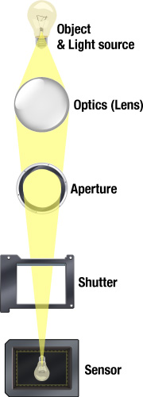
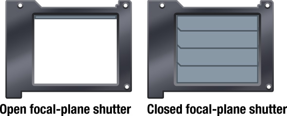

Ever wonder what it is that actually makes a camera work? This tutorial will cover the inner workings of a camera, and introduce you into photography basics and the expansive world of taking better photographs.
To take beautiful photographs you do not need an expensive camera and a bag full of equipment. What is important is the photographer’s ability to see his/her surrounding and use knowledge and personal feel for the subject.
Being the first article in a series, this lesson is meant to only cover the basics of photography. The idea with this series is to get people more interested in photography, awaken creativity and hopefully help people enjoy this hobby even more. The community here at Tutorial9 is an important part of this series and I would love to hear your feedback and questions.

The word “photography” is French but is based on Greek word and literarily means “drawing with light“. That’s what photography is all about, without light — no photograph. The art of photography is basically seeing and balancing the light.
The illustration to the left shows the path the light travels from the object to the sensor (or film in non-digital cameras).
First the light needs to go through the lens, which is a series of differently shaped pieces of glass. If the focus is good then the light will meet on the sensor.
The aperture is placed inside the lens and is basically an opening that controls how much light reaches the sensor.
On most modern cameras the shutter is placed inside the camera body. This piece of mechanics is what controls how long time the sensor is exposed to the light.
The sensor is a very sensitive plate where the light is absorbed and transformed into pixels. As you can see on this illustration, the image the sensor picks up is actually upside down, just like our eyes sees the world, the processor inside the camera then flips it.
The aperture sits inside the lens and controls how much light passes through the lens and onto the sensor. A large aperture lets through very much light and vice versa. Knowing how the aperture affects the photograph is one of the most important parts of photography — it affects the amount of light, depth of field, lens speed, sharpness and vignetting among other things. I will talk more about these things in later parts of this series.
F-numbers, a mathematical number that expresses the diameter of the aperture, are an important part of understanding how the aperture and exposure work. All f-numbers have a common notation, such as ƒ/5.6 for an f-number of 5.6. There are a set numbers of f-numbers that are used in photography, there are several different scales but the “standard” full-stop f-number scale is this:
ƒ/# 1.4 2 2.8 4 5.6 8 11 16 22 32
These are known as full-stop f-numbers. If you decrease the f-number with one full-stop, like ƒ/4 to ƒ/2.8, the amount of light that passes through will double. If you increase the f-number with one full-stop, like ƒ/5.6 to ƒ/8, only half the amount of light will reach the sensor.
There can be several f-numbers between the ones above — depending on what scale is being used. The most common one is a 1/3 scale, which means that every third step is a full-stop, and thus giving you two settings between every full-stop. For example between ƒ/8 and ƒ/11 you will find ƒ/9 and ƒ/10. This can be rather confusing at first, so here’s a short reminder:
A higher f-number = a smaller aperture = less light
A lower f-number = a larger aperture = more light

The shutter is what controls how long the sensor is exposed to the light. The longer the shutter is open the more light can be captured by the sensor. A fast shutter speed will result in “freezing” a moving object and a slow shutter speed will let you capture the motion of a moving object.
There is a scale of stops for the shutter speeds just like for the aperture, below are the full-stops.
1/1000 s 1/500 s 1/250 s 1/125 s 1/60 s 1/30 s 1/15 s 1/8 s 1/4 s 1/2 s 1 s
And just as with the aperture, the shutter speed is often on a 1/3 scale, giving your two steps in between every full-stop. For example between 1/60s and 1/125s you will find 1/80s and 1/100s.
The two primary factors which control exposure are shutter speed and aperture. We will cover these things in greater detail in other lessons.
The ISO speed (the name comes from the International Organization for Standardization) is a measure of the film speed, or its sensitivity to light. With digital cameras the ISO affects the sensor instead of the film, but the principal is the same. A low ISO speed requires a longer exposure and is referred to as slow, a high ISO speed requires less time to give the same exposure and is therefore referred to as fast. One step in the ISO equals one full-stop, so the ISO is not on a 1/3 scale — film can be found with 1/3 ISO speeds, but it’s uncommon in the digital world. These are the most common ISO speeds.
ISO 50 100 200 400 800 1600 3200
On 35mm film, a film with high ISO speed had much more grain than a slower film — but the modern sensors don’t create the same grain with high ISO speeds. Instead it creates noise. The digital noise is not as favorable as the film grain and can destroy a photo if it’s too visible (the same goes with the grain, but it’s effect was more subtle and often more liked).
If light is no problem, then always use a low ISO number but if you’re indoors with bad light or other conditions when you find the combination of aperture/shutter not to be enough the ISO speed can be a great asset. New digital sensors are constantly developed and the noise levels with high ISO speeds are decreasing with every new release.